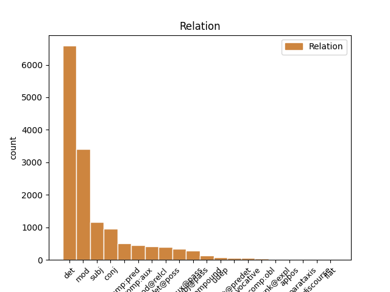
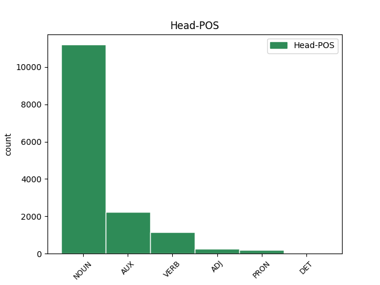
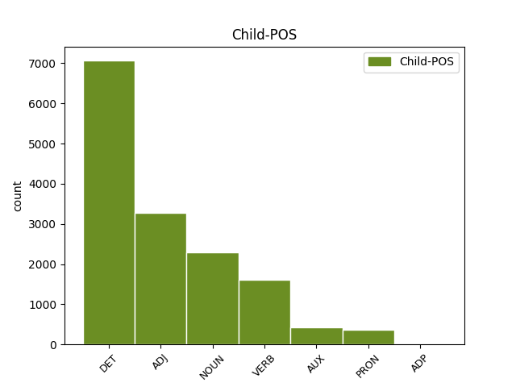

Distribution of features within this leaf



Agreement Rules sorted by frequency.
- When the dependent token is the determiner(det) of the head token, and the dependent token is DET.
1 Nessun _ _ _ _ 0 _ _ _
2 poema _ _ _ _ 0 _ _ _
3 di _ _ _ _ 0 _ _ _
4 Shakespeare _ _ _ _ 0 _ _ _
5 era _ _ _ _ 0 _ _ _
6 incluso _ _ _ _ 0 _ _ _
7 in _ _ _ _ 0 _ _ _
8 la il DET RD Definite=Def|Gender=Fem|Number=Sing|PronType=Art 9 det _ _
9 raccolta raccolta NOUN S Gender=Fem|Number=Sing 0 _ _ _
10 " _ _ _ _ 0 _ _ _
11 First _ _ _ _ 0 _ _ _
12 Folio _ _ _ _ 0 _ _ _
13 " _ _ _ _ 0 _ _ _
14 . _ _ _ _ 0 _ _ _
1 Due _ _ _ _ 0 _ _ _
2 opere _ _ _ _ 0 _ _ _
3 che _ _ _ _ 0 _ _ _
4 non _ _ _ _ 0 _ _ _
5 sono _ _ _ _ 0 _ _ _
6 raccolte _ _ _ _ 0 _ _ _
7 in _ _ _ _ 0 _ _ _
8 il _ _ _ _ 0 _ _ _
9 First _ _ _ _ 0 _ _ _
10 Folio _ _ _ _ 0 _ _ _
11 , _ _ _ _ 0 _ _ _
12 I _ _ _ _ 0 _ _ _
13 due _ _ _ _ 0 _ _ _
14 nobili _ _ _ _ 0 _ _ _
15 gentiluomini _ _ _ _ 0 _ _ _
16 e _ _ _ _ 0 _ _ _
17 Pericle _ _ _ _ 0 _ _ _
18 , _ _ _ _ 0 _ _ _
19 Principe _ _ _ _ 0 _ _ _
20 di _ _ _ _ 0 _ _ _
21 Tiro _ _ _ _ 0 _ _ _
22 , _ _ _ _ 0 _ _ _
23 sono _ _ _ _ 0 _ _ _
24 ora _ _ _ _ 0 _ _ _
25 accettate _ _ _ _ 0 _ _ _
26 come _ _ _ _ 0 _ _ _
27 parte _ _ _ _ 0 _ _ _
28 integrante _ _ _ _ 0 _ _ _
29 di _ _ _ _ 0 _ _ _
30 il _ _ _ _ 0 _ _ _
31 canone _ _ _ _ 0 _ _ _
32 di _ _ _ _ 0 _ _ _
33 opere _ _ _ _ 0 _ _ _
34 , _ _ _ _ 0 _ _ _
35 affermando _ _ _ _ 0 _ _ _
36 che _ _ _ _ 0 _ _ _
37 Shakespeare _ _ _ _ 0 _ _ _
38 diede _ _ _ _ 0 _ _ _
39 un _ _ _ _ 0 _ _ _
40 contributo contributo NOUN S Gender=Masc|Number=Sing 0 _ _ _
41 maggiore maggiore ADJ A Degree=Cmp|Number=Sing 40 mod _ _
42 a _ _ _ _ 0 _ _ _
43 la _ _ _ _ 0 _ _ _
44 loro _ _ _ _ 0 _ _ _
45 composizione _ _ _ _ 0 _ _ _
46 . _ _ _ _ 0 _ _ _
1 Le _ _ _ _ 0 _ _ _
2 opere opera NOUN S Gender=Fem|Number=Plur 5 subj _ _
3 di _ _ _ _ 0 _ _ _
4 Shakespeare _ _ _ _ 0 _ _ _
5 comprendono comprendere VERB V Mood=Ind|Number=Plur|Person=3|Tense=Pres|VerbForm=Fin 0 _ _ _
6 36 _ _ _ _ 0 _ _ _
7 pezzi _ _ _ _ 0 _ _ _
8 teatriali _ _ _ _ 0 _ _ _
9 , _ _ _ _ 0 _ _ _
10 stampati _ _ _ _ 0 _ _ _
11 in _ _ _ _ 0 _ _ _
12 il _ _ _ _ 0 _ _ _
13 First _ _ _ _ 0 _ _ _
14 Folio _ _ _ _ 0 _ _ _
15 di _ _ _ _ 0 _ _ _
16 il _ _ _ _ 0 _ _ _
17 1623 _ _ _ _ 0 _ _ _
18 , _ _ _ _ 0 _ _ _
19 elencati _ _ _ _ 0 _ _ _
20 seguendo _ _ _ _ 0 _ _ _
21 la _ _ _ _ 0 _ _ _
22 classificazione _ _ _ _ 0 _ _ _
23 di _ _ _ _ 0 _ _ _
24 il _ _ _ _ 0 _ _ _
25 Folio _ _ _ _ 0 _ _ _
26 come _ _ _ _ 0 _ _ _
27 commedie _ _ _ _ 0 _ _ _
28 , _ _ _ _ 0 _ _ _
29 storie _ _ _ _ 0 _ _ _
30 e _ _ _ _ 0 _ _ _
31 tragedie _ _ _ _ 0 _ _ _
32 . _ _ _ _ 0 _ _ _
1 Due _ _ _ _ 0 _ _ _
2 opere _ _ _ _ 0 _ _ _
3 che _ _ _ _ 0 _ _ _
4 non _ _ _ _ 0 _ _ _
5 sono _ _ _ _ 0 _ _ _
6 raccolte _ _ _ _ 0 _ _ _
7 in _ _ _ _ 0 _ _ _
8 il _ _ _ _ 0 _ _ _
9 First _ _ _ _ 0 _ _ _
10 Folio _ _ _ _ 0 _ _ _
11 , _ _ _ _ 0 _ _ _
12 I _ _ _ _ 0 _ _ _
13 due _ _ _ _ 0 _ _ _
14 nobili _ _ _ _ 0 _ _ _
15 gentiluomini _ _ _ _ 0 _ _ _
16 e _ _ _ _ 0 _ _ _
17 Pericle _ _ _ _ 0 _ _ _
18 , _ _ _ _ 0 _ _ _
19 Principe _ _ _ _ 0 _ _ _
20 di _ _ _ _ 0 _ _ _
21 Tiro _ _ _ _ 0 _ _ _
22 , _ _ _ _ 0 _ _ _
23 sono _ _ _ _ 0 _ _ _
24 ora _ _ _ _ 0 _ _ _
25 accettate _ _ _ _ 0 _ _ _
26 come _ _ _ _ 0 _ _ _
27 parte parte NOUN S Gender=Fem|Number=Sing 0 _ _ _
28 integrante integrare VERB V Number=Sing|Tense=Pres|VerbForm=Part 27 mod _ _
29 di _ _ _ _ 0 _ _ _
30 il _ _ _ _ 0 _ _ _
31 canone _ _ _ _ 0 _ _ _
32 di _ _ _ _ 0 _ _ _
33 opere _ _ _ _ 0 _ _ _
34 , _ _ _ _ 0 _ _ _
35 affermando _ _ _ _ 0 _ _ _
36 che _ _ _ _ 0 _ _ _
37 Shakespeare _ _ _ _ 0 _ _ _
38 diede _ _ _ _ 0 _ _ _
39 un _ _ _ _ 0 _ _ _
40 contributo _ _ _ _ 0 _ _ _
41 maggiore _ _ _ _ 0 _ _ _
42 a _ _ _ _ 0 _ _ _
43 la _ _ _ _ 0 _ _ _
44 loro _ _ _ _ 0 _ _ _
45 composizione _ _ _ _ 0 _ _ _
46 . _ _ _ _ 0 _ _ _
1 Nessun _ _ _ _ 0 _ _ _
2 documento _ _ _ _ 0 _ _ _
3 contemporaneo _ _ _ _ 0 _ _ _
4 descrive _ _ _ _ 0 _ _ _
5 l' _ _ _ _ 0 _ _ _
6 aspetto _ _ _ _ 0 _ _ _
7 fisico _ _ _ _ 0 _ _ _
8 di _ _ _ _ 0 _ _ _
9 Shakespeare _ _ _ _ 0 _ _ _
10 e _ _ _ _ 0 _ _ _
11 non _ _ _ _ 0 _ _ _
12 ci _ _ _ _ 0 _ _ _
13 sono _ _ _ _ 0 _ _ _
14 prove _ _ _ _ 0 _ _ _
15 che _ _ _ _ 0 _ _ _
16 lui _ _ _ _ 0 _ _ _
17 abbia _ _ _ _ 0 _ _ _
18 mai _ _ _ _ 0 _ _ _
19 commissionato _ _ _ _ 0 _ _ _
20 un _ _ _ _ 0 _ _ _
21 suo _ _ _ _ 0 _ _ _
22 ritratto _ _ _ _ 0 _ _ _
23 , _ _ _ _ 0 _ _ _
24 così _ _ _ _ 0 _ _ _
25 , _ _ _ _ 0 _ _ _
26 il _ _ _ _ 0 _ _ _
27 ritratto _ _ _ _ 0 _ _ _
28 di _ _ _ _ 0 _ _ _
29 Droeshout _ _ _ _ 0 _ _ _
30 che _ _ _ _ 0 _ _ _
31 Ben _ _ _ _ 0 _ _ _
32 Jonson _ _ _ _ 0 _ _ _
33 considerò _ _ _ _ 0 _ _ _
34 veritiero _ _ _ _ 0 _ _ _
35 , _ _ _ _ 0 _ _ _
36 e _ _ _ _ 0 _ _ _
37 il _ _ _ _ 0 _ _ _
38 suo _ _ _ _ 0 _ _ _
39 monumento _ _ _ _ 0 _ _ _
40 a _ _ _ _ 0 _ _ _
41 Stratford _ _ _ _ 0 _ _ _
42 forniscono _ _ _ _ 0 _ _ _
43 la _ _ _ _ 0 _ _ _
44 migliore _ _ _ _ 0 _ _ _
45 testimonianza _ _ _ _ 0 _ _ _
46 di _ _ _ _ 0 _ _ _
47 il _ _ _ _ 0 _ _ _
48 suo suo DET AP Gender=Masc|Number=Sing|Poss=Yes|PronType=Prs 49 det@poss _ _
49 aspetto aspetto NOUN S Gender=Masc|Number=Sing 0 _ _ _
50 fisico _ _ _ _ 0 _ _ _
51 . _ _ _ _ 0 _ _ _
1 Le _ _ _ _ 0 _ _ _
2 opere _ _ _ _ 0 _ _ _
3 di _ _ _ _ 0 _ _ _
4 Shakespeare _ _ _ _ 0 _ _ _
5 comprendono _ _ _ _ 0 _ _ _
6 36 _ _ _ _ 0 _ _ _
7 pezzi _ _ _ _ 0 _ _ _
8 teatriali _ _ _ _ 0 _ _ _
9 , _ _ _ _ 0 _ _ _
10 stampati _ _ _ _ 0 _ _ _
11 in _ _ _ _ 0 _ _ _
12 il _ _ _ _ 0 _ _ _
13 First _ _ _ _ 0 _ _ _
14 Folio _ _ _ _ 0 _ _ _
15 di _ _ _ _ 0 _ _ _
16 il _ _ _ _ 0 _ _ _
17 1623 _ _ _ _ 0 _ _ _
18 , _ _ _ _ 0 _ _ _
19 elencati _ _ _ _ 0 _ _ _
20 seguendo _ _ _ _ 0 _ _ _
21 la _ _ _ _ 0 _ _ _
22 classificazione _ _ _ _ 0 _ _ _
23 di _ _ _ _ 0 _ _ _
24 il _ _ _ _ 0 _ _ _
25 Folio _ _ _ _ 0 _ _ _
26 come _ _ _ _ 0 _ _ _
27 commedie _ _ _ _ 0 _ _ _
28 , _ _ _ _ 0 _ _ _
29 storie storia NOUN S Gender=Fem|Number=Plur 0 _ _ _
30 e _ _ _ _ 0 _ _ _
31 tragedie tragedia NOUN S Gender=Fem|Number=Plur 29 conj _ SpaceAfter=No
32 . _ _ _ _ 0 _ _ _
1 Nessun _ _ _ _ 0 _ _ _
2 poema _ _ _ _ 0 _ _ _
3 di _ _ _ _ 0 _ _ _
4 Shakespeare _ _ _ _ 0 _ _ _
5 era essere AUX VA Mood=Ind|Number=Sing|Person=3|Tense=Imp|VerbForm=Fin 0 _ _ _
6 incluso includere VERB V Gender=Masc|Number=Sing|Tense=Past|VerbForm=Part 5 comp:aux@pass _ _
7 in _ _ _ _ 0 _ _ _
8 la _ _ _ _ 0 _ _ _
9 raccolta _ _ _ _ 0 _ _ _
10 " _ _ _ _ 0 _ _ _
11 First _ _ _ _ 0 _ _ _
12 Folio _ _ _ _ 0 _ _ _
13 " _ _ _ _ 0 _ _ _
14 . _ _ _ _ 0 _ _ _
1 Nessun _ _ _ _ 0 _ _ _
2 documento _ _ _ _ 0 _ _ _
3 contemporaneo _ _ _ _ 0 _ _ _
4 descrive _ _ _ _ 0 _ _ _
5 l' _ _ _ _ 0 _ _ _
6 aspetto _ _ _ _ 0 _ _ _
7 fisico _ _ _ _ 0 _ _ _
8 di _ _ _ _ 0 _ _ _
9 Shakespeare _ _ _ _ 0 _ _ _
10 e _ _ _ _ 0 _ _ _
11 non _ _ _ _ 0 _ _ _
12 ci _ _ _ _ 0 _ _ _
13 sono _ _ _ _ 0 _ _ _
14 prove _ _ _ _ 0 _ _ _
15 che _ _ _ _ 0 _ _ _
16 lui _ _ _ _ 0 _ _ _
17 abbia avere AUX VA Mood=Sub|Number=Sing|Person=3|Tense=Pres|VerbForm=Fin 0 _ _ _
18 mai _ _ _ _ 0 _ _ _
19 commissionato commissionare VERB V Gender=Masc|Number=Sing|Tense=Past|VerbForm=Part 17 comp:aux _ _
20 un _ _ _ _ 0 _ _ _
21 suo _ _ _ _ 0 _ _ _
22 ritratto _ _ _ _ 0 _ _ _
23 , _ _ _ _ 0 _ _ _
24 così _ _ _ _ 0 _ _ _
25 , _ _ _ _ 0 _ _ _
26 il _ _ _ _ 0 _ _ _
27 ritratto _ _ _ _ 0 _ _ _
28 di _ _ _ _ 0 _ _ _
29 Droeshout _ _ _ _ 0 _ _ _
30 che _ _ _ _ 0 _ _ _
31 Ben _ _ _ _ 0 _ _ _
32 Jonson _ _ _ _ 0 _ _ _
33 considerò _ _ _ _ 0 _ _ _
34 veritiero _ _ _ _ 0 _ _ _
35 , _ _ _ _ 0 _ _ _
36 e _ _ _ _ 0 _ _ _
37 il _ _ _ _ 0 _ _ _
38 suo _ _ _ _ 0 _ _ _
39 monumento _ _ _ _ 0 _ _ _
40 a _ _ _ _ 0 _ _ _
41 Stratford _ _ _ _ 0 _ _ _
42 forniscono _ _ _ _ 0 _ _ _
43 la _ _ _ _ 0 _ _ _
44 migliore _ _ _ _ 0 _ _ _
45 testimonianza _ _ _ _ 0 _ _ _
46 di _ _ _ _ 0 _ _ _
47 il _ _ _ _ 0 _ _ _
48 suo _ _ _ _ 0 _ _ _
49 aspetto _ _ _ _ 0 _ _ _
50 fisico _ _ _ _ 0 _ _ _
51 . _ _ _ _ 0 _ _ _
1 Nessun _ _ _ _ 0 _ _ _
2 poema poema NOUN S Gender=Masc|Number=Sing 5 subj@pass _ _
3 di _ _ _ _ 0 _ _ _
4 Shakespeare _ _ _ _ 0 _ _ _
5 era essere AUX VA Mood=Ind|Number=Sing|Person=3|Tense=Imp|VerbForm=Fin 0 _ _ _
6 incluso _ _ _ _ 0 _ _ _
7 in _ _ _ _ 0 _ _ _
8 la _ _ _ _ 0 _ _ _
9 raccolta _ _ _ _ 0 _ _ _
10 " _ _ _ _ 0 _ _ _
11 First _ _ _ _ 0 _ _ _
12 Folio _ _ _ _ 0 _ _ _
13 " _ _ _ _ 0 _ _ _
14 . _ _ _ _ 0 _ _ _
1 Nessun _ _ _ _ 0 _ _ _
2 documento _ _ _ _ 0 _ _ _
3 contemporaneo _ _ _ _ 0 _ _ _
4 descrive _ _ _ _ 0 _ _ _
5 l' _ _ _ _ 0 _ _ _
6 aspetto _ _ _ _ 0 _ _ _
7 fisico _ _ _ _ 0 _ _ _
8 di _ _ _ _ 0 _ _ _
9 Shakespeare _ _ _ _ 0 _ _ _
10 e _ _ _ _ 0 _ _ _
11 non _ _ _ _ 0 _ _ _
12 ci _ _ _ _ 0 _ _ _
13 sono _ _ _ _ 0 _ _ _
14 prove _ _ _ _ 0 _ _ _
15 che _ _ _ _ 0 _ _ _
16 lui _ _ _ _ 0 _ _ _
17 abbia _ _ _ _ 0 _ _ _
18 mai _ _ _ _ 0 _ _ _
19 commissionato _ _ _ _ 0 _ _ _
20 un _ _ _ _ 0 _ _ _
21 suo _ _ _ _ 0 _ _ _
22 ritratto _ _ _ _ 0 _ _ _
23 , _ _ _ _ 0 _ _ _
24 così _ _ _ _ 0 _ _ _
25 , _ _ _ _ 0 _ _ _
26 il _ _ _ _ 0 _ _ _
27 ritratto _ _ _ _ 0 _ _ _
28 di _ _ _ _ 0 _ _ _
29 Droeshout _ _ _ _ 0 _ _ _
30 che _ _ _ _ 0 _ _ _
31 Ben _ _ _ _ 0 _ _ _
32 Jonson _ _ _ _ 0 _ _ _
33 considerò considerare VERB V Mood=Ind|Number=Sing|Person=3|Tense=Past|VerbForm=Fin 0 _ _ _
34 veritiero veritiero ADJ A Gender=Masc|Number=Sing 33 comp:pred _ SpaceAfter=No
35 , _ _ _ _ 0 _ _ _
36 e _ _ _ _ 0 _ _ _
37 il _ _ _ _ 0 _ _ _
38 suo _ _ _ _ 0 _ _ _
39 monumento _ _ _ _ 0 _ _ _
40 a _ _ _ _ 0 _ _ _
41 Stratford _ _ _ _ 0 _ _ _
42 forniscono _ _ _ _ 0 _ _ _
43 la _ _ _ _ 0 _ _ _
44 migliore _ _ _ _ 0 _ _ _
45 testimonianza _ _ _ _ 0 _ _ _
46 di _ _ _ _ 0 _ _ _
47 il _ _ _ _ 0 _ _ _
48 suo _ _ _ _ 0 _ _ _
49 aspetto _ _ _ _ 0 _ _ _
50 fisico _ _ _ _ 0 _ _ _
51 . _ _ _ _ 0 _ _ _
1 Da _ _ _ _ 0 _ _ _
2 il _ _ _ _ 0 _ _ _
3 diciottesimo _ _ _ _ 0 _ _ _
4 secolo _ _ _ _ 0 _ _ _
5 , _ _ _ _ 0 _ _ _
6 il _ _ _ _ 0 _ _ _
7 desiderio _ _ _ _ 0 _ _ _
8 di _ _ _ _ 0 _ _ _
9 avere _ _ _ _ 0 _ _ _
10 ritratti _ _ _ _ 0 _ _ _
11 originali _ _ _ _ 0 _ _ _
12 di _ _ _ _ 0 _ _ _
13 Shakespeare _ _ _ _ 0 _ _ _
14 alimentò _ _ _ _ 0 _ _ _
15 la _ _ _ _ 0 _ _ _
16 diffusione _ _ _ _ 0 _ _ _
17 di _ _ _ _ 0 _ _ _
18 dichiarazioni _ _ _ _ 0 _ _ _
19 di _ _ _ _ 0 _ _ _
20 autenticità _ _ _ _ 0 _ _ _
21 di _ _ _ _ 0 _ _ _
22 varie _ _ _ _ 0 _ _ _
23 immagini immagine NOUN S Gender=Fem|Number=Plur 0 _ _ _
24 che _ _ _ _ 0 _ _ _
25 ritraevano ritrarre VERB V Mood=Ind|Number=Plur|Person=3|Tense=Imp|VerbForm=Fin 23 mod@relcl _ _
26 Shakespeare _ _ _ _ 0 _ _ _
27 . _ _ _ _ 0 _ _ _
1 Alcuni _ _ _ _ 0 _ _ _
2 studiosi _ _ _ _ 0 _ _ _
3 sostengono _ _ _ _ 0 _ _ _
4 che _ _ _ _ 0 _ _ _
5 i _ _ _ _ 0 _ _ _
6 membri _ _ _ _ 0 _ _ _
7 di _ _ _ _ 0 _ _ _
8 la _ _ _ _ 0 _ _ _
9 famiglia _ _ _ _ 0 _ _ _
10 di _ _ _ _ 0 _ _ _
11 Shakespeare _ _ _ _ 0 _ _ _
12 fossero essere AUX V Mood=Sub|Number=Plur|Person=3|Tense=Imp|VerbForm=Fin 0 _ _ _
13 cattolici cattolico NOUN S Gender=Masc|Number=Plur 12 comp:pred _ _
14 quando _ _ _ _ 0 _ _ _
15 l' _ _ _ _ 0 _ _ _
16 essere _ _ _ _ 0 _ _ _
17 cattolico _ _ _ _ 0 _ _ _
18 era _ _ _ _ 0 _ _ _
19 considerato _ _ _ _ 0 _ _ _
20 illegale _ _ _ _ 0 _ _ _
21 . _ _ _ _ 0 _ _ _
1 Le _ _ _ _ 0 _ _ _
2 opere _ _ _ _ 0 _ _ _
3 di _ _ _ _ 0 _ _ _
4 Shakespeare _ _ _ _ 0 _ _ _
5 comprendono _ _ _ _ 0 _ _ _
6 36 _ _ _ _ 0 _ _ _
7 pezzi _ _ _ _ 0 _ _ _
8 teatriali _ _ _ _ 0 _ _ _
9 , _ _ _ _ 0 _ _ _
10 stampati stampare VERB V Gender=Masc|Number=Plur|Tense=Past|VerbForm=Part 0 _ _ _
11 in _ _ _ _ 0 _ _ _
12 il _ _ _ _ 0 _ _ _
13 First _ _ _ _ 0 _ _ _
14 Folio _ _ _ _ 0 _ _ _
15 di _ _ _ _ 0 _ _ _
16 il _ _ _ _ 0 _ _ _
17 1623 _ _ _ _ 0 _ _ _
18 , _ _ _ _ 0 _ _ _
19 elencati elencare VERB V Gender=Masc|Number=Plur|Tense=Past|VerbForm=Part 10 conj _ _
20 seguendo _ _ _ _ 0 _ _ _
21 la _ _ _ _ 0 _ _ _
22 classificazione _ _ _ _ 0 _ _ _
23 di _ _ _ _ 0 _ _ _
24 il _ _ _ _ 0 _ _ _
25 Folio _ _ _ _ 0 _ _ _
26 come _ _ _ _ 0 _ _ _
27 commedie _ _ _ _ 0 _ _ _
28 , _ _ _ _ 0 _ _ _
29 storie _ _ _ _ 0 _ _ _
30 e _ _ _ _ 0 _ _ _
31 tragedie _ _ _ _ 0 _ _ _
32 . _ _ _ _ 0 _ _ _
1 Nessun _ _ _ _ 0 _ _ _
2 documento _ _ _ _ 0 _ _ _
3 contemporaneo _ _ _ _ 0 _ _ _
4 descrive _ _ _ _ 0 _ _ _
5 l' _ _ _ _ 0 _ _ _
6 aspetto _ _ _ _ 0 _ _ _
7 fisico _ _ _ _ 0 _ _ _
8 di _ _ _ _ 0 _ _ _
9 Shakespeare _ _ _ _ 0 _ _ _
10 e _ _ _ _ 0 _ _ _
11 non _ _ _ _ 0 _ _ _
12 ci _ _ _ _ 0 _ _ _
13 sono _ _ _ _ 0 _ _ _
14 prove _ _ _ _ 0 _ _ _
15 che _ _ _ _ 0 _ _ _
16 lui lui PRON PE Gender=Masc|Number=Sing|Person=3|PronType=Prs 17 subj _ _
17 abbia avere AUX VA Mood=Sub|Number=Sing|Person=3|Tense=Pres|VerbForm=Fin 0 _ _ _
18 mai _ _ _ _ 0 _ _ _
19 commissionato _ _ _ _ 0 _ _ _
20 un _ _ _ _ 0 _ _ _
21 suo _ _ _ _ 0 _ _ _
22 ritratto _ _ _ _ 0 _ _ _
23 , _ _ _ _ 0 _ _ _
24 così _ _ _ _ 0 _ _ _
25 , _ _ _ _ 0 _ _ _
26 il _ _ _ _ 0 _ _ _
27 ritratto _ _ _ _ 0 _ _ _
28 di _ _ _ _ 0 _ _ _
29 Droeshout _ _ _ _ 0 _ _ _
30 che _ _ _ _ 0 _ _ _
31 Ben _ _ _ _ 0 _ _ _
32 Jonson _ _ _ _ 0 _ _ _
33 considerò _ _ _ _ 0 _ _ _
34 veritiero _ _ _ _ 0 _ _ _
35 , _ _ _ _ 0 _ _ _
36 e _ _ _ _ 0 _ _ _
37 il _ _ _ _ 0 _ _ _
38 suo _ _ _ _ 0 _ _ _
39 monumento _ _ _ _ 0 _ _ _
40 a _ _ _ _ 0 _ _ _
41 Stratford _ _ _ _ 0 _ _ _
42 forniscono _ _ _ _ 0 _ _ _
43 la _ _ _ _ 0 _ _ _
44 migliore _ _ _ _ 0 _ _ _
45 testimonianza _ _ _ _ 0 _ _ _
46 di _ _ _ _ 0 _ _ _
47 il _ _ _ _ 0 _ _ _
48 suo _ _ _ _ 0 _ _ _
49 aspetto _ _ _ _ 0 _ _ _
50 fisico _ _ _ _ 0 _ _ _
51 . _ _ _ _ 0 _ _ _
1 " _ _ _ _ 0 _ _ _
2 quel _ _ _ _ 0 _ _ _
3 re _ _ _ _ 0 _ _ _
4 di _ _ _ _ 0 _ _ _
5 uno _ _ _ _ 0 _ _ _
6 Shakespeare _ _ _ _ 0 _ _ _
7 " _ _ _ _ 0 _ _ _
8 , _ _ _ _ 0 _ _ _
9 il _ _ _ _ 0 _ _ _
10 saggista _ _ _ _ 0 _ _ _
11 Thomas _ _ _ _ 0 _ _ _
12 Carlyle _ _ _ _ 0 _ _ _
13 scrisse _ _ _ _ 0 _ _ _
14 in _ _ _ _ 0 _ _ _
15 il _ _ _ _ 0 _ _ _
16 1840 _ _ _ _ 0 _ _ _
17 , _ _ _ _ 0 _ _ _
18 " _ _ _ _ 0 _ _ _
19 egli _ _ _ _ 0 _ _ _
20 non _ _ _ _ 0 _ _ _
21 risplende _ _ _ _ 0 _ _ _
22 , _ _ _ _ 0 _ _ _
23 tra _ _ _ _ 0 _ _ _
24 la _ _ _ _ 0 _ _ _
25 sovranità _ _ _ _ 0 _ _ _
26 incoronata _ _ _ _ 0 _ _ _
27 , _ _ _ _ 0 _ _ _
28 sopra _ _ _ _ 0 _ _ _
29 noi _ _ _ _ 0 _ _ _
30 tutti _ _ _ _ 0 _ _ _
31 , _ _ _ _ 0 _ _ _
32 come _ _ _ _ 0 _ _ _
33 il _ _ _ _ 0 _ _ _
34 più _ _ _ _ 0 _ _ _
35 nobile nobile ADJ A Number=Sing 0 _ _ _
36 , _ _ _ _ 0 _ _ _
37 il _ _ _ _ 0 _ _ _
38 più _ _ _ _ 0 _ _ _
39 gentile gentile ADJ A Number=Sing 35 conj _ SpaceAfter=No
40 , _ _ _ _ 0 _ _ _
41 e _ _ _ _ 0 _ _ _
42 il _ _ _ _ 0 _ _ _
43 più _ _ _ _ 0 _ _ _
44 forte _ _ _ _ 0 _ _ _
45 di _ _ _ _ 0 _ _ _
46 i _ _ _ _ 0 _ _ _
47 segni _ _ _ _ 0 _ _ _
48 spericolati _ _ _ _ 0 _ _ _
49 ; _ _ _ _ 0 _ _ _
1 Quando _ _ _ _ 0 _ _ _
2 la _ _ _ _ 0 _ _ _
3 compagnia _ _ _ _ 0 _ _ _
4 teatrale _ _ _ _ 0 _ _ _
5 si _ _ _ _ 0 _ _ _
6 trovò _ _ _ _ 0 _ _ _
7 coinvolta _ _ _ _ 0 _ _ _
8 in _ _ _ _ 0 _ _ _
9 una _ _ _ _ 0 _ _ _
10 disputa _ _ _ _ 0 _ _ _
11 con _ _ _ _ 0 _ _ _
12 il _ _ _ _ 0 _ _ _
13 proprietario _ _ _ _ 0 _ _ _
14 , _ _ _ _ 0 _ _ _
15 demolirono _ _ _ _ 0 _ _ _
16 il _ _ _ _ 0 _ _ _
17 Theater _ _ _ _ 0 _ _ _
18 e _ _ _ _ 0 _ _ _
19 usarono _ _ _ _ 0 _ _ _
20 le _ _ _ _ 0 _ _ _
21 travi _ _ _ _ 0 _ _ _
22 per _ _ _ _ 0 _ _ _
23 costruire _ _ _ _ 0 _ _ _
24 il _ _ _ _ 0 _ _ _
25 Globe _ _ _ _ 0 _ _ _
26 Theater _ _ _ _ 0 _ _ _
27 , _ _ _ _ 0 _ _ _
28 il _ _ _ _ 0 _ _ _
29 primo _ _ _ _ 0 _ _ _
30 teatro _ _ _ _ 0 _ _ _
31 di _ _ _ _ 0 _ _ _
32 prosa _ _ _ _ 0 _ _ _
33 costruito _ _ _ _ 0 _ _ _
34 da _ _ _ _ 0 _ _ _
35 attori _ _ _ _ 0 _ _ _
36 per _ _ _ _ 0 _ _ _
37 attori _ _ _ _ 0 _ _ _
38 , _ _ _ _ 0 _ _ _
39 in _ _ _ _ 0 _ _ _
40 la _ _ _ _ 0 _ _ _
41 riva riva NOUN S Gender=Fem|Number=Sing 0 _ _ _
42 sud sud NOUN S Gender=Masc|Number=Sing 41 compound _ _
43 di _ _ _ _ 0 _ _ _
44 il _ _ _ _ 0 _ _ _
45 Tamigi _ _ _ _ 0 _ _ _
46 , _ _ _ _ 0 _ _ _
47 a _ _ _ _ 0 _ _ _
48 Southwark _ _ _ _ 0 _ _ _
49 . _ _ _ _ 0 _ _ _
1 Due _ _ _ _ 0 _ _ _
2 opere opera NOUN S Gender=Fem|Number=Plur 0 _ _ _
3 che _ _ _ _ 0 _ _ _
4 non _ _ _ _ 0 _ _ _
5 sono essere AUX VA Mood=Ind|Number=Plur|Person=3|Tense=Pres|VerbForm=Fin 2 mod@relcl _ _
6 raccolte _ _ _ _ 0 _ _ _
7 in _ _ _ _ 0 _ _ _
8 il _ _ _ _ 0 _ _ _
9 First _ _ _ _ 0 _ _ _
10 Folio _ _ _ _ 0 _ _ _
11 , _ _ _ _ 0 _ _ _
12 I _ _ _ _ 0 _ _ _
13 due _ _ _ _ 0 _ _ _
14 nobili _ _ _ _ 0 _ _ _
15 gentiluomini _ _ _ _ 0 _ _ _
16 e _ _ _ _ 0 _ _ _
17 Pericle _ _ _ _ 0 _ _ _
18 , _ _ _ _ 0 _ _ _
19 Principe _ _ _ _ 0 _ _ _
20 di _ _ _ _ 0 _ _ _
21 Tiro _ _ _ _ 0 _ _ _
22 , _ _ _ _ 0 _ _ _
23 sono _ _ _ _ 0 _ _ _
24 ora _ _ _ _ 0 _ _ _
25 accettate _ _ _ _ 0 _ _ _
26 come _ _ _ _ 0 _ _ _
27 parte _ _ _ _ 0 _ _ _
28 integrante _ _ _ _ 0 _ _ _
29 di _ _ _ _ 0 _ _ _
30 il _ _ _ _ 0 _ _ _
31 canone _ _ _ _ 0 _ _ _
32 di _ _ _ _ 0 _ _ _
33 opere _ _ _ _ 0 _ _ _
34 , _ _ _ _ 0 _ _ _
35 affermando _ _ _ _ 0 _ _ _
36 che _ _ _ _ 0 _ _ _
37 Shakespeare _ _ _ _ 0 _ _ _
38 diede _ _ _ _ 0 _ _ _
39 un _ _ _ _ 0 _ _ _
40 contributo _ _ _ _ 0 _ _ _
41 maggiore _ _ _ _ 0 _ _ _
42 a _ _ _ _ 0 _ _ _
43 la _ _ _ _ 0 _ _ _
44 loro _ _ _ _ 0 _ _ _
45 composizione _ _ _ _ 0 _ _ _
46 . _ _ _ _ 0 _ _ _
1 Tuttavia _ _ _ _ 0 _ _ _
2 , _ _ _ _ 0 _ _ _
3 ora _ _ _ _ 0 _ _ _
4 , _ _ _ _ 0 _ _ _
5 il _ _ _ _ 0 _ _ _
6 documento _ _ _ _ 0 _ _ _
7 è essere AUX VA Mood=Ind|Number=Sing|Person=3|Tense=Pres|VerbForm=Fin 0 _ _ _
8 andato andare AUX VA Gender=Masc|Number=Sing|Tense=Past|VerbForm=Part 7 comp:aux _ _
9 perduto _ _ _ _ 0 _ _ _
10 e _ _ _ _ 0 _ _ _
11 gli _ _ _ _ 0 _ _ _
12 studiosi _ _ _ _ 0 _ _ _
13 non _ _ _ _ 0 _ _ _
14 sono _ _ _ _ 0 _ _ _
15 d' _ _ _ _ 0 _ _ _
16 accordo _ _ _ _ 0 _ _ _
17 riguardo _ _ _ _ 0 _ _ _
18 la _ _ _ _ 0 _ _ _
19 sua _ _ _ _ 0 _ _ _
20 autenticità _ _ _ _ 0 _ _ _
21 . _ _ _ _ 0 _ _ _
1 Shakespeare _ _ _ _ 0 _ _ _
2 non _ _ _ _ 0 _ _ _
3 è essere AUX VA Mood=Ind|Number=Sing|Person=3|Tense=Pres|VerbForm=Fin 0 _ _ _
4 stato _ _ _ _ 0 _ _ _
5 apprezzato _ _ _ _ 0 _ _ _
6 quando _ _ _ _ 0 _ _ _
7 era _ _ _ _ 0 _ _ _
8 in _ _ _ _ 0 _ _ _
9 vita _ _ _ _ 0 _ _ _
10 , _ _ _ _ 0 _ _ _
11 ma _ _ _ _ 0 _ _ _
12 ha avere AUX VA Mood=Ind|Number=Sing|Person=3|Tense=Pres|VerbForm=Fin 3 conj _ _
13 ricevuto _ _ _ _ 0 _ _ _
14 molti _ _ _ _ 0 _ _ _
15 elogi _ _ _ _ 0 _ _ _
16 . _ _ _ _ 0 _ _ _
1 Espressioni _ _ _ _ 0 _ _ _
2 come _ _ _ _ 0 _ _ _
3 " _ _ _ _ 0 _ _ _
4 con _ _ _ _ 0 _ _ _
5 il _ _ _ _ 0 _ _ _
6 fiato _ _ _ _ 0 _ _ _
7 sospeso _ _ _ _ 0 _ _ _
8 " _ _ _ _ 0 _ _ _
9 ( _ _ _ _ 0 _ _ _
10 Mercante _ _ _ _ 0 _ _ _
11 di _ _ _ _ 0 _ _ _
12 Venezia _ _ _ _ 0 _ _ _
13 ) _ _ _ _ 0 _ _ _
14 e _ _ _ _ 0 _ _ _
15 " _ _ _ _ 0 _ _ _
16 risultato _ _ _ _ 0 _ _ _
17 scontato _ _ _ _ 0 _ _ _
18 " _ _ _ _ 0 _ _ _
19 ( _ _ _ _ 0 _ _ _
20 Otello _ _ _ _ 0 _ _ _
21 ) _ _ _ _ 0 _ _ _
22 sono _ _ _ _ 0 _ _ _
23 diventati _ _ _ _ 0 _ _ _
24 comuni _ _ _ _ 0 _ _ _
25 in _ _ _ _ 0 _ _ _
26 l' _ _ _ _ 0 _ _ _
27 inglese _ _ _ _ 0 _ _ _
28 parlato _ _ _ _ 0 _ _ _
29 di _ _ _ _ 0 _ _ _
30 tutti tutto DET T Gender=Masc|Number=Plur|PronType=Tot 32 det@predet _ _
31 i _ _ _ _ 0 _ _ _
32 giorni giorno NOUN S Gender=Masc|Number=Plur 0 _ _ _
33 . _ _ _ _ 0 _ _ _
1 L' _ _ _ _ 0 _ _ _
2 artista artista NOUN S Number=Sing 0 _ _ _
3 svizzero _ _ _ _ 0 _ _ _
4 romantico _ _ _ _ 0 _ _ _
5 Henry _ _ _ _ 0 _ _ _
6 Fuseli _ _ _ _ 0 _ _ _
7 , _ _ _ _ 0 _ _ _
8 amico amico NOUN S Gender=Masc|Number=Sing 2 mod _ _
9 di _ _ _ _ 0 _ _ _
10 William _ _ _ _ 0 _ _ _
11 Blake _ _ _ _ 0 _ _ _
12 , _ _ _ _ 0 _ _ _
13 ha _ _ _ _ 0 _ _ _
14 perfino _ _ _ _ 0 _ _ _
15 tradotto _ _ _ _ 0 _ _ _
16 Macbeth _ _ _ _ 0 _ _ _
17 in _ _ _ _ 0 _ _ _
18 tedesco _ _ _ _ 0 _ _ _
19 . _ _ _ _ 0 _ _ _
1 Signor signore NOUN S Gender=Masc|Number=Sing 13 vocative _ _
2 presidente _ _ _ _ 0 _ _ _
3 , _ _ _ _ 0 _ _ _
4 la _ _ _ _ 0 _ _ _
5 priorità _ _ _ _ 0 _ _ _
6 attribuita _ _ _ _ 0 _ _ _
7 a _ _ _ _ 0 _ _ _
8 i _ _ _ _ 0 _ _ _
9 criteri _ _ _ _ 0 _ _ _
10 finanziari _ _ _ _ 0 _ _ _
11 e _ _ _ _ 0 _ _ _
12 monetari _ _ _ _ 0 _ _ _
13 rafforza rafforzare VERB V Mood=Ind|Number=Sing|Person=3|Tense=Pres|VerbForm=Fin 0 _ _ _
14 il _ _ _ _ 0 _ _ _
15 dilagare _ _ _ _ 0 _ _ _
16 di _ _ _ _ 0 _ _ _
17 le _ _ _ _ 0 _ _ _
18 ineguaglianze _ _ _ _ 0 _ _ _
19 di _ _ _ _ 0 _ _ _
20 ogni _ _ _ _ 0 _ _ _
21 genere _ _ _ _ 0 _ _ _
22 . _ _ _ _ 0 _ _ _
1 In _ _ _ _ 0 _ _ _
2 il _ _ _ _ 0 _ _ _
3 1591 _ _ _ _ 0 _ _ _
4 le _ _ _ _ 0 _ _ _
5 autorità _ _ _ _ 0 _ _ _
6 riportarono _ _ _ _ 0 _ _ _
7 che _ _ _ _ 0 _ _ _
8 John _ _ _ _ 0 _ _ _
9 Shakespeare _ _ _ _ 0 _ _ _
10 non _ _ _ _ 0 _ _ _
11 andava andare VERB V Mood=Ind|Number=Sing|Person=3|Tense=Imp|VerbForm=Fin 0 _ _ _
12 in _ _ _ _ 0 _ _ _
13 chiesa _ _ _ _ 0 _ _ _
14 " _ _ _ _ 0 _ _ _
15 per _ _ _ _ 0 _ _ _
16 paura _ _ _ _ 0 _ _ _
17 di _ _ _ _ 0 _ _ _
18 un _ _ _ _ 0 _ _ _
19 processo _ _ _ _ 0 _ _ _
20 per _ _ _ _ 0 _ _ _
21 debiti _ _ _ _ 0 _ _ _
22 " _ _ _ _ 0 _ _ _
23 , _ _ _ _ 0 _ _ _
24 una _ _ _ _ 0 _ _ _
25 dispensa dispensa NOUN S Gender=Fem|Number=Sing 11 udep _ _
26 comune _ _ _ _ 0 _ _ _
27 fra _ _ _ _ 0 _ _ _
28 i _ _ _ _ 0 _ _ _
29 cattolici _ _ _ _ 0 _ _ _
30 . _ _ _ _ 0 _ _ _
1 Il _ _ _ _ 0 _ _ _
2 verso _ _ _ _ 0 _ _ _
3 giambico _ _ _ _ 0 _ _ _
4 di _ _ _ _ 0 _ _ _
5 le _ _ _ _ 0 _ _ _
6 sue _ _ _ _ 0 _ _ _
7 prime _ _ _ _ 0 _ _ _
8 opere _ _ _ _ 0 _ _ _
9 teatrali _ _ _ _ 0 _ _ _
10 è essere AUX V Mood=Ind|Number=Sing|Person=3|Tense=Pres|VerbForm=Fin 0 _ _ _
11 molto _ _ _ _ 0 _ _ _
12 diverso diverso PRON PI Gender=Masc|Number=Sing|PronType=Ind 10 comp:pred _ _
13 da _ _ _ _ 0 _ _ _
14 quello _ _ _ _ 0 _ _ _
15 di _ _ _ _ 0 _ _ _
16 le _ _ _ _ 0 _ _ _
17 sue _ _ _ _ 0 _ _ _
18 ultime _ _ _ _ 0 _ _ _
19 opere _ _ _ _ 0 _ _ _
20 . _ _ _ _ 0 _ _ _
1 Fu _ _ _ _ 0 _ _ _
2 rimpiazzato _ _ _ _ 0 _ _ _
3 da _ _ _ _ 0 _ _ _
4 Robert _ _ _ _ 0 _ _ _
5 Armin _ _ _ _ 0 _ _ _
6 a _ _ _ _ 0 _ _ _
7 cavallo _ _ _ _ 0 _ _ _
8 di _ _ _ _ 0 _ _ _
9 il _ _ _ _ 0 _ _ _
10 XVI _ _ _ _ 0 _ _ _
11 secolo _ _ _ _ 0 _ _ _
12 , _ _ _ _ 0 _ _ _
13 che _ _ _ _ 0 _ _ _
14 recitò _ _ _ _ 0 _ _ _
15 in _ _ _ _ 0 _ _ _
16 parti _ _ _ _ 0 _ _ _
17 come _ _ _ _ 0 _ _ _
18 quella _ _ _ _ 0 _ _ _
19 di _ _ _ _ 0 _ _ _
20 Touchstone _ _ _ _ 0 _ _ _
21 in _ _ _ _ 0 _ _ _
22 Come _ _ _ _ 0 _ _ _
23 Vi vi PRON PC Clitic=Yes|Number=Plur|Person=2|PronType=Prs 24 comp:obl _ _
24 Piace piacere VERB V Mood=Ind|Number=Plur|Person=2|Tense=Pres|VerbForm=Fin 0 _ _ _
25 e _ _ _ _ 0 _ _ _
26 quella _ _ _ _ 0 _ _ _
27 di _ _ _ _ 0 _ _ _
28 il _ _ _ _ 0 _ _ _
29 pazzo _ _ _ _ 0 _ _ _
30 in _ _ _ _ 0 _ _ _
31 Re _ _ _ _ 0 _ _ _
32 Lear _ _ _ _ 0 _ _ _
33 . _ _ _ _ 0 _ _ _
1 Ogni _ _ _ _ 0 _ _ _
2 cliente _ _ _ _ 0 _ _ _
3 potenziale _ _ _ _ 0 _ _ _
4 è essere AUX VA Mood=Ind|Number=Sing|Person=3|Tense=Pres|VerbForm=Fin 0 _ _ _
5 stato essere AUX VA Gender=Masc|Number=Sing|Tense=Past|VerbForm=Part 4 comp:aux@pass _ _
6 ottenuto _ _ _ _ 0 _ _ _
7 con _ _ _ _ 0 _ _ _
8 una _ _ _ _ 0 _ _ _
9 spesa _ _ _ _ 0 _ _ _
10 di _ _ _ _ 0 _ _ _
11 10,25 _ _ _ _ 0 _ _ _
12 dollari _ _ _ _ 0 _ _ _
13 , _ _ _ _ 0 _ _ _
14 a _ _ _ _ 0 _ _ _
15 partire _ _ _ _ 0 _ _ _
16 da _ _ _ _ 0 _ _ _
17 un _ _ _ _ 0 _ _ _
18 CPC _ _ _ _ 0 _ _ _
19 di _ _ _ _ 0 _ _ _
20 1,25 _ _ _ _ 0 _ _ _
21 dollari _ _ _ _ 0 _ _ _
22 . _ _ _ _ 0 _ _ _
1 Ci ci PRON PC Clitic=Yes|Number=Plur|Person=1|PronType=Prs 2 unk@expl _ _
2 rifiutiamo rifiutare VERB V Mood=Ind|Number=Plur|Person=1|Tense=Pres|VerbForm=Fin 0 _ _ _
3 di _ _ _ _ 0 _ _ _
4 passare _ _ _ _ 0 _ _ _
5 per _ _ _ _ 0 _ _ _
6 le _ _ _ _ 0 _ _ _
7 vittime _ _ _ _ 0 _ _ _
8 sventurate _ _ _ _ 0 _ _ _
9 in _ _ _ _ 0 _ _ _
10 i _ _ _ _ 0 _ _ _
11 futuri _ _ _ _ 0 _ _ _
12 libri _ _ _ _ 0 _ _ _
13 di _ _ _ _ 0 _ _ _
14 storia _ _ _ _ 0 _ _ _
15 . _ _ _ _ 0 _ _ _
1 Molte molto PRON PI Gender=Fem|Number=Plur|PronType=Ind 5 subj@pass _ _
2 di _ _ _ _ 0 _ _ _
3 le _ _ _ _ 0 _ _ _
4 opere _ _ _ _ 0 _ _ _
5 erano essere AUX VA Mood=Ind|Number=Plur|Person=3|Tense=Imp|VerbForm=Fin 0 _ _ _
6 già _ _ _ _ 0 _ _ _
7 state _ _ _ _ 0 _ _ _
8 pubblicate _ _ _ _ 0 _ _ _
9 in _ _ _ _ 0 _ _ _
10 le _ _ _ _ 0 _ _ _
11 loro _ _ _ _ 0 _ _ _
12 versioni _ _ _ _ 0 _ _ _
13 in _ _ _ _ 0 _ _ _
14 quarto _ _ _ _ 0 _ _ _
15 - _ _ _ _ 0 _ _ _
16 volumetti _ _ _ _ 0 _ _ _
17 composti _ _ _ _ 0 _ _ _
18 di _ _ _ _ 0 _ _ _
19 fogli _ _ _ _ 0 _ _ _
20 di _ _ _ _ 0 _ _ _
21 carta _ _ _ _ 0 _ _ _
22 piegati _ _ _ _ 0 _ _ _
23 in _ _ _ _ 0 _ _ _
24 due _ _ _ _ 0 _ _ _
25 in _ _ _ _ 0 _ _ _
26 modo _ _ _ _ 0 _ _ _
27 da _ _ _ _ 0 _ _ _
28 ottenere _ _ _ _ 0 _ _ _
29 quattro _ _ _ _ 0 _ _ _
30 pagine _ _ _ _ 0 _ _ _
31 . _ _ _ _ 0 _ _ _
1 In _ _ _ _ 0 _ _ _
2 competizione _ _ _ _ 0 _ _ _
3 con _ _ _ _ 0 _ _ _
4 il _ _ _ _ 0 _ _ _
5 compositore _ _ _ _ 0 _ _ _
6 ungherese _ _ _ _ 0 _ _ _
7 Franz _ _ _ _ 0 _ _ _
8 Liszt _ _ _ _ 0 _ _ _
9 , _ _ _ _ 0 _ _ _
10 Balzac _ _ _ _ 0 _ _ _
11 andò _ _ _ _ 0 _ _ _
12 a _ _ _ _ 0 _ _ _
13 trovar _ _ _ _ 0 _ _ _
14 la _ _ _ _ 0 _ _ _
15 a _ _ _ _ 0 _ _ _
16 san _ _ _ _ 0 _ _ _
17 Pietroburgo _ _ _ _ 0 _ _ _
18 in _ _ _ _ 0 _ _ _
19 il _ _ _ _ 0 _ _ _
20 1843 _ _ _ _ 0 _ _ _
21 e _ _ _ _ 0 _ _ _
22 le _ _ _ _ 0 _ _ _
23 rimase rimanere VERB V Mood=Ind|Number=Sing|Person=3|Tense=Past|VerbForm=Fin 0 _ _ _
24 impresso imprimere VERB V Gender=Masc|Number=Sing|Tense=Past|VerbForm=Part 23 comp:pred _ _
25 in _ _ _ _ 0 _ _ _
26 il _ _ _ _ 0 _ _ _
27 cuore _ _ _ _ 0 _ _ _
28 . _ _ _ _ 0 _ _ _
1 Shakespare _ _ _ _ 0 _ _ _
2 li _ _ _ _ 0 _ _ _
3 mescola mescolare VERB V Mood=Ind|Number=Sing|Person=3|Tense=Pres|VerbForm=Fin 0 _ _ _
4 per _ _ _ _ 0 _ _ _
5 tutta _ _ _ _ 0 _ _ _
6 la _ _ _ _ 0 _ _ _
7 sua _ _ _ _ 0 _ _ _
8 carriera _ _ _ _ 0 _ _ _
9 , _ _ _ _ 0 _ _ _
10 Romeo _ _ _ _ 0 _ _ _
11 e _ _ _ _ 0 _ _ _
12 Giulietta _ _ _ _ 0 _ _ _
13 è essere AUX V Mood=Ind|Number=Sing|Person=3|Tense=Pres|VerbForm=Fin 3 mod _ _
14 forse _ _ _ _ 0 _ _ _
15 l' _ _ _ _ 0 _ _ _
16 esempio _ _ _ _ 0 _ _ _
17 migliore _ _ _ _ 0 _ _ _
18 di _ _ _ _ 0 _ _ _
19 questa _ _ _ _ 0 _ _ _
20 fusione _ _ _ _ 0 _ _ _
21 di _ _ _ _ 0 _ _ _
22 stili _ _ _ _ 0 _ _ _
23 . _ _ _ _ 0 _ _ _
1 Due _ _ _ _ 0 _ _ _
2 opere opera NOUN S Gender=Fem|Number=Plur 0 _ _ _
3 che _ _ _ _ 0 _ _ _
4 non _ _ _ _ 0 _ _ _
5 sono _ _ _ _ 0 _ _ _
6 raccolte _ _ _ _ 0 _ _ _
7 in _ _ _ _ 0 _ _ _
8 il _ _ _ _ 0 _ _ _
9 First _ _ _ _ 0 _ _ _
10 Folio _ _ _ _ 0 _ _ _
11 , _ _ _ _ 0 _ _ _
12 I _ _ _ _ 0 _ _ _
13 due _ _ _ _ 0 _ _ _
14 nobili _ _ _ _ 0 _ _ _
15 gentiluomini gentiluomo NOUN S Gender=Masc|Number=Plur 2 appos _ _
16 e _ _ _ _ 0 _ _ _
17 Pericle _ _ _ _ 0 _ _ _
18 , _ _ _ _ 0 _ _ _
19 Principe _ _ _ _ 0 _ _ _
20 di _ _ _ _ 0 _ _ _
21 Tiro _ _ _ _ 0 _ _ _
22 , _ _ _ _ 0 _ _ _
23 sono _ _ _ _ 0 _ _ _
24 ora _ _ _ _ 0 _ _ _
25 accettate _ _ _ _ 0 _ _ _
26 come _ _ _ _ 0 _ _ _
27 parte _ _ _ _ 0 _ _ _
28 integrante _ _ _ _ 0 _ _ _
29 di _ _ _ _ 0 _ _ _
30 il _ _ _ _ 0 _ _ _
31 canone _ _ _ _ 0 _ _ _
32 di _ _ _ _ 0 _ _ _
33 opere _ _ _ _ 0 _ _ _
34 , _ _ _ _ 0 _ _ _
35 affermando _ _ _ _ 0 _ _ _
36 che _ _ _ _ 0 _ _ _
37 Shakespeare _ _ _ _ 0 _ _ _
38 diede _ _ _ _ 0 _ _ _
39 un _ _ _ _ 0 _ _ _
40 contributo _ _ _ _ 0 _ _ _
41 maggiore _ _ _ _ 0 _ _ _
42 a _ _ _ _ 0 _ _ _
43 la _ _ _ _ 0 _ _ _
44 loro _ _ _ _ 0 _ _ _
45 composizione _ _ _ _ 0 _ _ _
46 . _ _ _ _ 0 _ _ _
1 una uno PRON PI Gender=Fem|Number=Sing|PronType=Ind 0 _ _ _
2 su _ _ _ _ 0 _ _ _
3 l' _ _ _ _ 0 _ _ _
4 incontrollabile _ _ _ _ 0 _ _ _
5 desiderio _ _ _ _ 0 _ _ _
6 per _ _ _ _ 0 _ _ _
7 una _ _ _ _ 0 _ _ _
8 donna _ _ _ _ 0 _ _ _
9 sposata _ _ _ _ 0 _ _ _
10 da _ _ _ _ 0 _ _ _
11 la _ _ _ _ 0 _ _ _
12 carnagione _ _ _ _ 0 _ _ _
13 scura _ _ _ _ 0 _ _ _
14 ( _ _ _ _ 0 _ _ _
15 la _ _ _ _ 0 _ _ _
16 " _ _ _ _ 0 _ _ _
17 dark _ _ _ _ 0 _ _ _
18 lady _ _ _ _ 0 _ _ _
19 " _ _ _ _ 0 _ _ _
20 ) _ _ _ _ 0 _ _ _
21 , _ _ _ _ 0 _ _ _
22 e _ _ _ _ 0 _ _ _
23 una uno PRON PI Gender=Fem|Number=Sing|PronType=Ind 1 conj _ _
24 su _ _ _ _ 0 _ _ _
25 l' _ _ _ _ 0 _ _ _
26 amore _ _ _ _ 0 _ _ _
27 conflittuale _ _ _ _ 0 _ _ _
28 per _ _ _ _ 0 _ _ _
29 un _ _ _ _ 0 _ _ _
30 bel _ _ _ _ 0 _ _ _
31 ragazzo _ _ _ _ 0 _ _ _
32 ( _ _ _ _ 0 _ _ _
33 il _ _ _ _ 0 _ _ _
34 " _ _ _ _ 0 _ _ _
35 fair _ _ _ _ 0 _ _ _
36 youth _ _ _ _ 0 _ _ _
37 " _ _ _ _ 0 _ _ _
38 ) _ _ _ _ 0 _ _ _
39 . _ _ _ _ 0 _ _ _
1 Una _ _ _ _ 0 _ _ _
2 serie _ _ _ _ 0 _ _ _
3 di _ _ _ _ 0 _ _ _
4 edizioni edizione NOUN S Gender=Fem|Number=Plur 0 _ _ _
5 scolastiche _ _ _ _ 0 _ _ _
6 di _ _ _ _ 0 _ _ _
7 la _ _ _ _ 0 _ _ _
8 sua _ _ _ _ 0 _ _ _
9 opera _ _ _ _ 0 _ _ _
10 , _ _ _ _ 0 _ _ _
11 specialmente _ _ _ _ 0 _ _ _
12 quelle quello PRON PD Gender=Fem|Number=Plur|PronType=Dem 4 mod _ _
13 di _ _ _ _ 0 _ _ _
14 Samuel _ _ _ _ 0 _ _ _
15 Johnson _ _ _ _ 0 _ _ _
16 in _ _ _ _ 0 _ _ _
17 il _ _ _ _ 0 _ _ _
18 1765 _ _ _ _ 0 _ _ _
19 e _ _ _ _ 0 _ _ _
20 Edmond _ _ _ _ 0 _ _ _
21 Malone _ _ _ _ 0 _ _ _
22 in _ _ _ _ 0 _ _ _
23 il _ _ _ _ 0 _ _ _
24 1790 _ _ _ _ 0 _ _ _
25 , _ _ _ _ 0 _ _ _
26 è _ _ _ _ 0 _ _ _
27 da _ _ _ _ 0 _ _ _
28 aggiungere _ _ _ _ 0 _ _ _
29 a _ _ _ _ 0 _ _ _
30 la _ _ _ _ 0 _ _ _
31 sua _ _ _ _ 0 _ _ _
32 crescente _ _ _ _ 0 _ _ _
33 reputazione _ _ _ _ 0 _ _ _
34 . _ _ _ _ 0 _ _ _
1 Sebbene _ _ _ _ 0 _ _ _
2 non _ _ _ _ 0 _ _ _
3 sopravviva _ _ _ _ 0 _ _ _
4 alcun _ _ _ _ 0 _ _ _
5 documento _ _ _ _ 0 _ _ _
6 di _ _ _ _ 0 _ _ _
7 il _ _ _ _ 0 _ _ _
8 periodo _ _ _ _ 0 _ _ _
9 , _ _ _ _ 0 _ _ _
10 la _ _ _ _ 0 _ _ _
11 maggior _ _ _ _ 0 _ _ _
12 parte _ _ _ _ 0 _ _ _
13 di _ _ _ _ 0 _ _ _
14 i _ _ _ _ 0 _ _ _
15 biografi _ _ _ _ 0 _ _ _
16 sono _ _ _ _ 0 _ _ _
17 concordi _ _ _ _ 0 _ _ _
18 in _ _ _ _ 0 _ _ _
19 il _ _ _ _ 0 _ _ _
20 sostenere _ _ _ _ 0 _ _ _
21 che _ _ _ _ 0 _ _ _
22 Shakespeare _ _ _ _ 0 _ _ _
23 probabilmente _ _ _ _ 0 _ _ _
24 frequentò _ _ _ _ 0 _ _ _
25 la _ _ _ _ 0 _ _ _
26 King's _ _ _ _ 0 _ _ _
27 New _ _ _ _ 0 _ _ _
28 School _ _ _ _ 0 _ _ _
29 a _ _ _ _ 0 _ _ _
30 Stratford _ _ _ _ 0 _ _ _
31 , _ _ _ _ 0 _ _ _
32 un _ _ _ _ 0 _ _ _
33 istituto _ _ _ _ 0 _ _ _
34 pubblico _ _ _ _ 0 _ _ _
35 autorizzato _ _ _ _ 0 _ _ _
36 da _ _ _ _ 0 _ _ _
37 il _ _ _ _ 0 _ _ _
38 1553 _ _ _ _ 0 _ _ _
39 , _ _ _ _ 0 _ _ _
40 distante distante ADJ A Number=Sing 0 _ _ _
41 circa _ _ _ _ 0 _ _ _
42 un _ _ _ _ 0 _ _ _
43 quarto quarto PRON NO Gender=Masc|Number=Sing|NumType=Ord|PronType=Ind 40 udep _ _
44 di _ _ _ _ 0 _ _ _
45 miglio _ _ _ _ 0 _ _ _
46 da _ _ _ _ 0 _ _ _
47 casa _ _ _ _ 0 _ _ _
48 sua _ _ _ _ 0 _ _ _
49 . _ _ _ _ 0 _ _ _
1 " _ _ _ _ 0 _ _ _
2 Quello _ _ _ _ 0 _ _ _
3 che _ _ _ _ 0 _ _ _
4 Balzac _ _ _ _ 0 _ _ _
5 ha _ _ _ _ 0 _ _ _
6 iniziato _ _ _ _ 0 _ _ _
7 " _ _ _ _ 0 _ _ _
8 , _ _ _ _ 0 _ _ _
9 dice dire VERB V Mood=Ind|Number=Sing|Person=3|Tense=Pres|VerbForm=Fin 14 parataxis _ _
10 Lehan _ _ _ _ 0 _ _ _
11 , _ _ _ _ 0 _ _ _
12 " _ _ _ _ 0 _ _ _
13 Flaubert _ _ _ _ 0 _ _ _
14 ha avere AUX VA Mood=Ind|Number=Sing|Person=3|Tense=Pres|VerbForm=Fin 0 _ _ _
15 aiutato _ _ _ _ 0 _ _ _
16 a _ _ _ _ 0 _ _ _
17 finir _ _ _ _ 0 _ _ _
18 lo _ _ _ _ 0 _ _ _
19 . _ _ _ _ 0 _ _ _
1 Per _ _ _ _ 0 _ _ _
2 noi _ _ _ _ 0 _ _ _
3 , _ _ _ _ 0 _ _ _
4 nuovi _ _ _ _ 0 _ _ _
5 deputati _ _ _ _ 0 _ _ _
6 a _ _ _ _ 0 _ _ _
7 il _ _ _ _ 0 _ _ _
8 parlamento _ _ _ _ 0 _ _ _
9 , _ _ _ _ 0 _ _ _
10 questa _ _ _ _ 0 _ _ _
11 è essere AUX VA Mood=Ind|Number=Sing|Person=3|Tense=Pres|VerbForm=Fin 12 comp:pred _ _
12 stata essere AUX V Gender=Fem|Number=Sing|Tense=Past|VerbForm=Part 0 _ _ _
13 la _ _ _ _ 0 _ _ _
14 prima _ _ _ _ 0 _ _ _
15 volta _ _ _ _ 0 _ _ _
16 , _ _ _ _ 0 _ _ _
17 e _ _ _ _ 0 _ _ _
18 devo _ _ _ _ 0 _ _ _
19 ammettere _ _ _ _ 0 _ _ _
20 che _ _ _ _ 0 _ _ _
21 ho _ _ _ _ 0 _ _ _
22 seguito _ _ _ _ 0 _ _ _
23 i _ _ _ _ 0 _ _ _
24 lavori _ _ _ _ 0 _ _ _
25 con _ _ _ _ 0 _ _ _
26 estremo _ _ _ _ 0 _ _ _
27 interesse _ _ _ _ 0 _ _ _
28 . _ _ _ _ 0 _ _ _
1 Zola _ _ _ _ 0 _ _ _
2 sosteneva _ _ _ _ 0 _ _ _
3 che _ _ _ _ 0 _ _ _
4 laddove _ _ _ _ 0 _ _ _
5 i _ _ _ _ 0 _ _ _
6 romantici romantico ADJ A Gender=Masc|Number=Plur 7 subj _ _
7 vedevano vedere VERB V Mood=Ind|Number=Plur|Person=3|Tense=Imp|VerbForm=Fin 0 _ _ _
8 il _ _ _ _ 0 _ _ _
9 mondo _ _ _ _ 0 _ _ _
10 attraverso _ _ _ _ 0 _ _ _
11 una _ _ _ _ 0 _ _ _
12 lente _ _ _ _ 0 _ _ _
13 colorata _ _ _ _ 0 _ _ _
14 , _ _ _ _ 0 _ _ _
15 i _ _ _ _ 0 _ _ _
16 naturalisti _ _ _ _ 0 _ _ _
17 osservano _ _ _ _ 0 _ _ _
18 attraverso _ _ _ _ 0 _ _ _
19 un _ _ _ _ 0 _ _ _
20 vetro _ _ _ _ 0 _ _ _
21 limpido _ _ _ _ 0 _ _ _
22 - _ _ _ _ 0 _ _ _
23 precisamente _ _ _ _ 0 _ _ _
24 il _ _ _ _ 0 _ _ _
25 tipo _ _ _ _ 0 _ _ _
26 di _ _ _ _ 0 _ _ _
27 effetto _ _ _ _ 0 _ _ _
28 che _ _ _ _ 0 _ _ _
29 Balzac _ _ _ _ 0 _ _ _
30 tentava _ _ _ _ 0 _ _ _
31 di _ _ _ _ 0 _ _ _
32 ottenere _ _ _ _ 0 _ _ _
33 in _ _ _ _ 0 _ _ _
34 le _ _ _ _ 0 _ _ _
35 sue _ _ _ _ 0 _ _ _
36 opere _ _ _ _ 0 _ _ _
37 . _ _ _ _ 0 _ _ _
1 Durante _ _ _ _ 0 _ _ _
2 la _ _ _ _ 0 _ _ _
3 preparazione _ _ _ _ 0 _ _ _
4 di _ _ _ _ 0 _ _ _
5 la _ _ _ _ 0 _ _ _
6 relazione _ _ _ _ 0 _ _ _
7 è essere AUX VA Mood=Ind|Number=Sing|Person=3|Tense=Pres|VerbForm=Fin 0 _ _ _
8 stato _ _ _ _ 0 _ _ _
9 interessante interessante ADJ A Number=Sing 7 comp:aux@pass _ _
10 discutere _ _ _ _ 0 _ _ _
11 di _ _ _ _ 0 _ _ _
12 i _ _ _ _ 0 _ _ _
13 temi _ _ _ _ 0 _ _ _
14 generali _ _ _ _ 0 _ _ _
15 relativi _ _ _ _ 0 _ _ _
16 a _ _ _ _ 0 _ _ _
17 la _ _ _ _ 0 _ _ _
18 politica _ _ _ _ 0 _ _ _
19 regionale _ _ _ _ 0 _ _ _
20 di _ _ _ _ 0 _ _ _
21 l' _ _ _ _ 0 _ _ _
22 Unione _ _ _ _ 0 _ _ _
23 Europea _ _ _ _ 0 _ _ _
24 . _ _ _ _ 0 _ _ _
1 Per _ _ _ _ 0 _ _ _
2 noi _ _ _ _ 0 _ _ _
3 , _ _ _ _ 0 _ _ _
4 nuovi _ _ _ _ 0 _ _ _
5 deputati _ _ _ _ 0 _ _ _
6 a _ _ _ _ 0 _ _ _
7 il _ _ _ _ 0 _ _ _
8 parlamento _ _ _ _ 0 _ _ _
9 , _ _ _ _ 0 _ _ _
10 questa _ _ _ _ 0 _ _ _
11 è essere AUX VA Mood=Ind|Number=Sing|Person=3|Tense=Pres|VerbForm=Fin 0 _ _ _
12 stata _ _ _ _ 0 _ _ _
13 la _ _ _ _ 0 _ _ _
14 prima _ _ _ _ 0 _ _ _
15 volta volta NOUN S Gender=Fem|Number=Sing 11 comp:aux@pass _ SpaceAfter=No
16 , _ _ _ _ 0 _ _ _
17 e _ _ _ _ 0 _ _ _
18 devo _ _ _ _ 0 _ _ _
19 ammettere _ _ _ _ 0 _ _ _
20 che _ _ _ _ 0 _ _ _
21 ho _ _ _ _ 0 _ _ _
22 seguito _ _ _ _ 0 _ _ _
23 i _ _ _ _ 0 _ _ _
24 lavori _ _ _ _ 0 _ _ _
25 con _ _ _ _ 0 _ _ _
26 estremo _ _ _ _ 0 _ _ _
27 interesse _ _ _ _ 0 _ _ _
28 . _ _ _ _ 0 _ _ _
1 Non _ _ _ _ 0 _ _ _
2 è essere AUX V Mood=Ind|Number=Sing|Person=3|Tense=Pres|VerbForm=Fin 0 _ _ _
3 chiaro _ _ _ _ 0 _ _ _
4 per _ _ _ _ 0 _ _ _
5 quali _ _ _ _ 0 _ _ _
6 compagnie _ _ _ _ 0 _ _ _
7 teatrali _ _ _ _ 0 _ _ _
8 Shakespeare _ _ _ _ 0 _ _ _
9 scrisse scrivere VERB V Mood=Ind|Number=Sing|Person=3|Tense=Past|VerbForm=Fin 2 subj _ _
10 le _ _ _ _ 0 _ _ _
11 sue _ _ _ _ 0 _ _ _
12 prime _ _ _ _ 0 _ _ _
13 opere _ _ _ _ 0 _ _ _
14 . _ _ _ _ 0 _ _ _
1 E _ _ _ _ 0 _ _ _
2 noi _ _ _ _ 0 _ _ _
3 stiamo _ _ _ _ 0 _ _ _
4 rendendo _ _ _ _ 0 _ _ _
5 l' _ _ _ _ 0 _ _ _
6 oceano _ _ _ _ 0 _ _ _
7 piuttosto _ _ _ _ 0 _ _ _
8 infelice _ _ _ _ 0 _ _ _
9 in _ _ _ _ 0 _ _ _
10 molti molto DET DI Gender=Masc|Number=Plur|PronType=Ind 0 _ _ _
11 e _ _ _ _ 0 _ _ _
12 svariati svariato DET DI Gender=Masc|Number=Plur|PronType=Ind 10 conj _ _
13 modi _ _ _ _ 0 _ _ _
14 . _ _ _ _ 0 _ _ _
1 Shakespeare _ _ _ _ 0 _ _ _
2 ha _ _ _ _ 0 _ _ _
3 anche _ _ _ _ 0 _ _ _
4 ispirato _ _ _ _ 0 _ _ _
5 molti _ _ _ _ 0 _ _ _
6 pittori _ _ _ _ 0 _ _ _
7 , _ _ _ _ 0 _ _ _
8 inclusi includere VERB V Gender=Masc|Number=Plur|Tense=Past|VerbForm=Part 0 _ _ _
9 i _ _ _ _ 0 _ _ _
10 romantici romantico ADJ A Gender=Masc|Number=Plur 8 subj@pass _ _
11 e _ _ _ _ 0 _ _ _
12 i _ _ _ _ 0 _ _ _
13 Preraffaelliti _ _ _ _ 0 _ _ _
14 . _ _ _ _ 0 _ _ _
1 Attribuzione attribuzione NOUN S Gender=Fem|Number=Sing 0 _ _ _
2 , _ _ _ _ 0 _ _ _
3 Condividi condividere VERB V Mood=Imp|Number=Sing|Person=2|Tense=Pres|VerbForm=Fin 1 flat _ _
4 a _ _ _ _ 0 _ _ _
5 lo _ _ _ _ 0 _ _ _
6 stesso _ _ _ _ 0 _ _ _
7 modo _ _ _ _ 0 _ _ _
8 . _ _ _ _ 0 _ _ _
1 La _ _ _ _ 0 _ _ _
2 proposta _ _ _ _ 0 _ _ _
3 concerne _ _ _ _ 0 _ _ _
4 l' _ _ _ _ 0 _ _ _
5 armonizzazione _ _ _ _ 0 _ _ _
6 di _ _ _ _ 0 _ _ _
7 i _ _ _ _ 0 _ _ _
8 requisiti _ _ _ _ 0 _ _ _
9 d' _ _ _ _ 0 _ _ _
10 esame _ _ _ _ 0 _ _ _
11 , _ _ _ _ 0 _ _ _
12 tuttavia _ _ _ _ 0 _ _ _
13 , _ _ _ _ 0 _ _ _
14 in _ _ _ _ 0 _ _ _
15 realtà _ _ _ _ 0 _ _ _
16 parla parlare VERB V Mood=Ind|Number=Sing|Person=3|Tense=Pres|VerbForm=Fin 0 _ _ _
17 anche _ _ _ _ 0 _ _ _
18 di _ _ _ _ 0 _ _ _
19 norme _ _ _ _ 0 _ _ _
20 minime _ _ _ _ 0 _ _ _
21 , _ _ _ _ 0 _ _ _
22 cosa cosa PRON PQ Number=Sing|PronType=Int 16 appos _ _
23 che _ _ _ _ 0 _ _ _
24 io _ _ _ _ 0 _ _ _
25 in _ _ _ _ 0 _ _ _
26 un _ _ _ _ 0 _ _ _
27 certo _ _ _ _ 0 _ _ _
28 senso _ _ _ _ 0 _ _ _
29 deploro _ _ _ _ 0 _ _ _
30 . _ _ _ _ 0 _ _ _
1 Ora _ _ _ _ 0 _ _ _
2 , _ _ _ _ 0 _ _ _
3 un _ _ _ _ 0 _ _ _
4 delfino delfino NOUN S Gender=Masc|Number=Sing 13 discourse _ SpaceAfter=No
5 , _ _ _ _ 0 _ _ _
6 madre _ _ _ _ 0 _ _ _
7 delfino _ _ _ _ 0 _ _ _
8 , _ _ _ _ 0 _ _ _
9 ogni _ _ _ _ 0 _ _ _
10 delfino _ _ _ _ 0 _ _ _
11 - _ _ _ _ 0 _ _ _
12 c' _ _ _ _ 0 _ _ _
13 è essere VERB V Mood=Ind|Number=Sing|Person=3|Tense=Pres|VerbForm=Fin 0 _ _ _
14 un _ _ _ _ 0 _ _ _
15 solo _ _ _ _ 0 _ _ _
16 modo _ _ _ _ 0 _ _ _
17 in _ _ _ _ 0 _ _ _
18 cui _ _ _ _ 0 _ _ _
19 un _ _ _ _ 0 _ _ _
20 PCB _ _ _ _ 0 _ _ _
21 possa _ _ _ _ 0 _ _ _
22 uscire _ _ _ _ 0 _ _ _
23 da _ _ _ _ 0 _ _ _
24 il _ _ _ _ 0 _ _ _
25 delfino _ _ _ _ 0 _ _ _
26 . _ _ _ _ 0 _ _ _
1 " _ _ _ _ 0 _ _ _
2 Essere _ _ _ _ 0 _ _ _
3 in _ _ _ _ 0 _ _ _
4 il _ _ _ _ 0 _ _ _
5 cuore _ _ _ _ 0 _ _ _
6 di _ _ _ _ 0 _ _ _
7 il _ _ _ _ 0 _ _ _
8 sistema _ _ _ _ 0 _ _ _
9 finanziario _ _ _ _ 0 _ _ _
10 globale _ _ _ _ 0 _ _ _
11 " _ _ _ _ 0 _ _ _
12 , _ _ _ _ 0 _ _ _
13 ha avere AUX VA Mood=Ind|Number=Sing|Person=3|Tense=Pres|VerbForm=Fin 17 parataxis _ _
14 dichiarato _ _ _ _ 0 _ _ _
15 , _ _ _ _ 0 _ _ _
16 " _ _ _ _ 0 _ _ _
17 amplia ampliare VERB V Mood=Ind|Number=Sing|Person=3|Tense=Pres|VerbForm=Fin 0 _ _ _
18 le _ _ _ _ 0 _ _ _
19 opportunità _ _ _ _ 0 _ _ _
20 di _ _ _ _ 0 _ _ _
21 investimento _ _ _ _ 0 _ _ _
22 per _ _ _ _ 0 _ _ _
23 le _ _ _ _ 0 _ _ _
24 istituzioni _ _ _ _ 0 _ _ _
25 che _ _ _ _ 0 _ _ _
26 si _ _ _ _ 0 _ _ _
27 occupano _ _ _ _ 0 _ _ _
28 di _ _ _ _ 0 _ _ _
29 i _ _ _ _ 0 _ _ _
30 risparmi _ _ _ _ 0 _ _ _
31 britannici _ _ _ _ 0 _ _ _
32 e _ _ _ _ 0 _ _ _
33 rinforza _ _ _ _ 0 _ _ _
34 l' _ _ _ _ 0 _ _ _
35 abilità _ _ _ _ 0 _ _ _
36 di _ _ _ _ 0 _ _ _
37 il _ _ _ _ 0 _ _ _
38 manifatturiero _ _ _ _ 0 _ _ _
39 e _ _ _ _ 0 _ _ _
40 di _ _ _ _ 0 _ _ _
41 i _ _ _ _ 0 _ _ _
42 settori _ _ _ _ 0 _ _ _
43 creativi _ _ _ _ 0 _ _ _
44 inglesi _ _ _ _ 0 _ _ _
45 a _ _ _ _ 0 _ _ _
46 competere _ _ _ _ 0 _ _ _
47 a _ _ _ _ 0 _ _ _
48 livello _ _ _ _ 0 _ _ _
49 globale _ _ _ _ 0 _ _ _
50 " _ _ _ _ 0 _ _ _
51 . _ _ _ _ 0 _ _ _
1 La _ _ _ _ 0 _ _ _
2 storia _ _ _ _ 0 _ _ _
3 di _ _ _ _ 0 _ _ _
4 Balzac _ _ _ _ 0 _ _ _
5 Une _ _ _ _ 0 _ _ _
6 Heure _ _ _ _ 0 _ _ _
7 de _ _ _ _ 0 _ _ _
8 Ma _ _ _ _ 0 _ _ _
9 Vie _ _ _ _ 0 _ _ _
10 ( _ _ _ _ 0 _ _ _
11 Un' _ _ _ _ 0 _ _ _
12 ora _ _ _ _ 0 _ _ _
13 di _ _ _ _ 0 _ _ _
14 la _ _ _ _ 0 _ _ _
15 mia _ _ _ _ 0 _ _ _
16 vita _ _ _ _ 0 _ _ _
17 , _ _ _ _ 0 _ _ _
18 1822 _ _ _ _ 0 _ _ _
19 ) _ _ _ _ 0 _ _ _
20 , _ _ _ _ 0 _ _ _
21 in _ _ _ _ 0 _ _ _
22 cui _ _ _ _ 0 _ _ _
23 i _ _ _ _ 0 _ _ _
24 dettagli _ _ _ _ 0 _ _ _
25 minuziosi _ _ _ _ 0 _ _ _
26 sono _ _ _ _ 0 _ _ _
27 seguiti _ _ _ _ 0 _ _ _
28 da _ _ _ _ 0 _ _ _
29 profonde _ _ _ _ 0 _ _ _
30 riflessioni _ _ _ _ 0 _ _ _
31 personali _ _ _ _ 0 _ _ _
32 è _ _ _ _ 0 _ _ _
33 un _ _ _ _ 0 _ _ _
34 chiaro _ _ _ _ 0 _ _ _
35 antecedente _ _ _ _ 0 _ _ _
36 di _ _ _ _ 0 _ _ _
37 lo _ _ _ _ 0 _ _ _
38 stile _ _ _ _ 0 _ _ _
39 che _ _ _ _ 0 _ _ _
40 Proust _ _ _ _ 0 _ _ _
41 ha _ _ _ _ 0 _ _ _
42 usato _ _ _ _ 0 _ _ _
43 in _ _ _ _ 0 _ _ _
44 À _ _ _ _ 0 _ _ _
45 la _ _ _ _ 0 _ _ _
46 recherche recherche NOUN S Gender=Fem|Number=Sing 0 _ _ _
47 du du ADP E Gender=Masc|Number=Sing 46 udep _ _
48 temps _ _ _ _ 0 _ _ _
49 perdu _ _ _ _ 0 _ _ _
50 . _ _ _ _ 0 _ _ _
1 Successivamente _ _ _ _ 0 _ _ _
2 scrisse _ _ _ _ 0 _ _ _
3 principalmente _ _ _ _ 0 _ _ _
4 tragedie _ _ _ _ 0 _ _ _
5 fino _ _ _ _ 0 _ _ _
6 a _ _ _ _ 0 _ _ _
7 il _ _ _ _ 0 _ _ _
8 1608 _ _ _ _ 0 _ _ _
9 circa _ _ _ _ 0 _ _ _
10 tra _ _ _ _ 0 _ _ _
11 le le DET RD Definite=Def|Gender=Fem|Number=Plur|PronType=Art 12 mod _ _
12 quali quale PRON PR Number=Plur|PronType=Rel 0 _ _ _
13 Amleto _ _ _ _ 0 _ _ _
14 , _ _ _ _ 0 _ _ _
15 Otello _ _ _ _ 0 _ _ _
16 e _ _ _ _ 0 _ _ _
17 Macbeth _ _ _ _ 0 _ _ _
18 , _ _ _ _ 0 _ _ _
19 considerate _ _ _ _ 0 _ _ _
20 come _ _ _ _ 0 _ _ _
21 alcuni _ _ _ _ 0 _ _ _
22 di _ _ _ _ 0 _ _ _
23 i _ _ _ _ 0 _ _ _
24 lavori _ _ _ _ 0 _ _ _
25 migliori _ _ _ _ 0 _ _ _
26 in _ _ _ _ 0 _ _ _
27 lingua _ _ _ _ 0 _ _ _
28 inglese _ _ _ _ 0 _ _ _
29 . _ _ _ _ 0 _ _ _
1 Questa _ _ _ _ 0 _ _ _
2 data _ _ _ _ 0 _ _ _
3 , _ _ _ _ 0 _ _ _
4 che _ _ _ _ 0 _ _ _
5 potrebbe _ _ _ _ 0 _ _ _
6 dipendere _ _ _ _ 0 _ _ _
7 da _ _ _ _ 0 _ _ _
8 un _ _ _ _ 0 _ _ _
9 errore _ _ _ _ 0 _ _ _
10 commesso _ _ _ _ 0 _ _ _
11 in _ _ _ _ 0 _ _ _
12 il _ _ _ _ 0 _ _ _
13 XVIII _ _ _ _ 0 _ _ _
14 secolo _ _ _ _ 0 _ _ _
15 da _ _ _ _ 0 _ _ _
16 uno _ _ _ _ 0 _ _ _
17 studioso _ _ _ _ 0 _ _ _
18 , _ _ _ _ 0 _ _ _
19 è essere AUX VA Mood=Ind|Number=Sing|Person=3|Tense=Pres|VerbForm=Fin 0 _ _ _
20 stata _ _ _ _ 0 _ _ _
21 considerata _ _ _ _ 0 _ _ _
22 interessante _ _ _ _ 0 _ _ _
23 da _ _ _ _ 0 _ _ _
24 i _ _ _ _ 0 _ _ _
25 biografi _ _ _ _ 0 _ _ _
26 , _ _ _ _ 0 _ _ _
27 dato dare VERB V Gender=Masc|Number=Sing|Tense=Past|VerbForm=Part 19 udep _ _
28 che _ _ _ _ 0 _ _ _
29 Shakespeare _ _ _ _ 0 _ _ _
30 morì _ _ _ _ 0 _ _ _
31 il _ _ _ _ 0 _ _ _
32 23 _ _ _ _ 0 _ _ _
33 aprile _ _ _ _ 0 _ _ _
34 1616 _ _ _ _ 0 _ _ _
35 . _ _ _ _ 0 _ _ _
Disagree Examples:
1 distribuzione _ _ _ _ 0 _ _ _
2 di _ _ _ _ 0 _ _ _
3 copie _ _ _ _ 0 _ _ _
4 di _ _ _ _ 0 _ _ _
5 l' _ _ _ _ 0 _ _ _
6 opera _ _ _ _ 0 _ _ _
7 o _ _ _ _ 0 _ _ _
8 di _ _ _ _ 0 _ _ _
9 supporti supporto NOUN S Gender=Masc|Number=Plur 0 _ _ _
10 fonografici _ _ _ _ 0 _ _ _
11 su _ _ _ _ 0 _ _ _
12 cui _ _ _ _ 0 _ _ _
13 l' _ _ _ _ 0 _ _ _
14 opera _ _ _ _ 0 _ _ _
15 è essere AUX VA Mood=Ind|Number=Sing|Person=3|Tense=Pres|VerbForm=Fin 9 mod@relcl _ _
16 registrata _ _ _ _ 0 _ _ _
17 , _ _ _ _ 0 _ _ _
18 comunicazione _ _ _ _ 0 _ _ _
19 a _ _ _ _ 0 _ _ _
20 il _ _ _ _ 0 _ _ _
21 pubblico _ _ _ _ 0 _ _ _
22 , _ _ _ _ 0 _ _ _
23 rappresentazione _ _ _ _ 0 _ _ _
24 , _ _ _ _ 0 _ _ _
25 esecuzione _ _ _ _ 0 _ _ _
26 , _ _ _ _ 0 _ _ _
27 recitazione _ _ _ _ 0 _ _ _
28 o _ _ _ _ 0 _ _ _
29 esposizione _ _ _ _ 0 _ _ _
30 in _ _ _ _ 0 _ _ _
31 pubblico _ _ _ _ 0 _ _ _
32 , _ _ _ _ 0 _ _ _
33 ivi _ _ _ _ 0 _ _ _
34 inclusa _ _ _ _ 0 _ _ _
35 la _ _ _ _ 0 _ _ _
36 trasmissione _ _ _ _ 0 _ _ _
37 audio _ _ _ _ 0 _ _ _
38 digitale _ _ _ _ 0 _ _ _
39 di _ _ _ _ 0 _ _ _
40 l' _ _ _ _ 0 _ _ _
41 opera _ _ _ _ 0 _ _ _
42 , _ _ _ _ 0 _ _ _
43 e _ _ _ _ 0 _ _ _
44 ciò _ _ _ _ 0 _ _ _
45 anche _ _ _ _ 0 _ _ _
46 quando _ _ _ _ 0 _ _ _
47 l' _ _ _ _ 0 _ _ _
48 opera _ _ _ _ 0 _ _ _
49 sia _ _ _ _ 0 _ _ _
50 incorporata _ _ _ _ 0 _ _ _
51 in _ _ _ _ 0 _ _ _
52 collezioni _ _ _ _ 0 _ _ _
53 di _ _ _ _ 0 _ _ _
54 opere _ _ _ _ 0 _ _ _
55 ; _ _ _ _ 0 _ _ _
1 distribuzione _ _ _ _ 0 _ _ _
2 di _ _ _ _ 0 _ _ _
3 copie _ _ _ _ 0 _ _ _
4 di _ _ _ _ 0 _ _ _
5 l' _ _ _ _ 0 _ _ _
6 opera _ _ _ _ 0 _ _ _
7 o _ _ _ _ 0 _ _ _
8 di _ _ _ _ 0 _ _ _
9 supporti supporto NOUN S Gender=Masc|Number=Plur 0 _ _ _
10 fonografici _ _ _ _ 0 _ _ _
11 su _ _ _ _ 0 _ _ _
12 cui _ _ _ _ 0 _ _ _
13 l' _ _ _ _ 0 _ _ _
14 opera _ _ _ _ 0 _ _ _
15 derivata _ _ _ _ 0 _ _ _
16 è essere AUX VA Mood=Ind|Number=Sing|Person=3|Tense=Pres|VerbForm=Fin 9 mod@relcl _ _
17 registrata _ _ _ _ 0 _ _ _
18 , _ _ _ _ 0 _ _ _
19 comunicazione _ _ _ _ 0 _ _ _
20 a _ _ _ _ 0 _ _ _
21 il _ _ _ _ 0 _ _ _
22 pubblico _ _ _ _ 0 _ _ _
23 , _ _ _ _ 0 _ _ _
24 rappresentazione _ _ _ _ 0 _ _ _
25 , _ _ _ _ 0 _ _ _
26 esecuzione _ _ _ _ 0 _ _ _
27 , _ _ _ _ 0 _ _ _
28 recitazione _ _ _ _ 0 _ _ _
29 o _ _ _ _ 0 _ _ _
30 esposizione _ _ _ _ 0 _ _ _
31 in _ _ _ _ 0 _ _ _
32 pubblico _ _ _ _ 0 _ _ _
33 , _ _ _ _ 0 _ _ _
34 ivi _ _ _ _ 0 _ _ _
35 inclusa _ _ _ _ 0 _ _ _
36 la _ _ _ _ 0 _ _ _
37 trasmissione _ _ _ _ 0 _ _ _
38 audio _ _ _ _ 0 _ _ _
39 digitale _ _ _ _ 0 _ _ _
40 di _ _ _ _ 0 _ _ _
41 opere _ _ _ _ 0 _ _ _
42 derivate _ _ _ _ 0 _ _ _
43 . _ _ _ _ 0 _ _ _
1 distribuzione _ _ _ _ 0 _ _ _
2 di _ _ _ _ 0 _ _ _
3 copie _ _ _ _ 0 _ _ _
4 di _ _ _ _ 0 _ _ _
5 l' _ _ _ _ 0 _ _ _
6 opera _ _ _ _ 0 _ _ _
7 o _ _ _ _ 0 _ _ _
8 di _ _ _ _ 0 _ _ _
9 supporti _ _ _ _ 0 _ _ _
10 fonografici _ _ _ _ 0 _ _ _
11 su _ _ _ _ 0 _ _ _
12 cui _ _ _ _ 0 _ _ _
13 l' _ _ _ _ 0 _ _ _
14 opera _ _ _ _ 0 _ _ _
15 derivata _ _ _ _ 0 _ _ _
16 è _ _ _ _ 0 _ _ _
17 registrata _ _ _ _ 0 _ _ _
18 , _ _ _ _ 0 _ _ _
19 comunicazione _ _ _ _ 0 _ _ _
20 a _ _ _ _ 0 _ _ _
21 il _ _ _ _ 0 _ _ _
22 pubblico _ _ _ _ 0 _ _ _
23 , _ _ _ _ 0 _ _ _
24 rappresentazione _ _ _ _ 0 _ _ _
25 , _ _ _ _ 0 _ _ _
26 esecuzione _ _ _ _ 0 _ _ _
27 , _ _ _ _ 0 _ _ _
28 recitazione _ _ _ _ 0 _ _ _
29 o _ _ _ _ 0 _ _ _
30 esposizione _ _ _ _ 0 _ _ _
31 in _ _ _ _ 0 _ _ _
32 pubblico _ _ _ _ 0 _ _ _
33 , _ _ _ _ 0 _ _ _
34 ivi _ _ _ _ 0 _ _ _
35 inclusa _ _ _ _ 0 _ _ _
36 la _ _ _ _ 0 _ _ _
37 trasmissione _ _ _ _ 0 _ _ _
38 audio _ _ _ _ 0 _ _ _
39 digitale _ _ _ _ 0 _ _ _
40 di _ _ _ _ 0 _ _ _
41 opere opere NOUN S Gender=Fem|Number=Sing 0 _ _ _
42 derivate derivato ADJ A Gender=Fem|Number=Plur 41 mod _ SpaceAfter=No
43 . _ _ _ _ 0 _ _ _
1 Non _ _ _ _ 0 _ _ _
2 puoi _ _ _ _ 0 _ _ _
3 proporre _ _ _ _ 0 _ _ _
4 od _ _ _ _ 0 _ _ _
5 imporre _ _ _ _ 0 _ _ _
6 alcuna _ _ _ _ 0 _ _ _
7 condizione _ _ _ _ 0 _ _ _
8 relativa _ _ _ _ 0 _ _ _
9 a _ _ _ _ 0 _ _ _
10 l' _ _ _ _ 0 _ _ _
11 opera _ _ _ _ 0 _ _ _
12 che _ _ _ _ 0 _ _ _
13 alteri _ _ _ _ 0 _ _ _
14 o _ _ _ _ 0 _ _ _
15 restringa _ _ _ _ 0 _ _ _
16 i _ _ _ _ 0 _ _ _
17 termini termine NOUN S Gender=Masc|Number=Plur 0 _ _ _
18 di _ _ _ _ 0 _ _ _
19 la _ _ _ _ 0 _ _ _
20 presente _ _ _ _ 0 _ _ _
21 licenza _ _ _ _ 0 _ _ _
22 o _ _ _ _ 0 _ _ _
23 l' _ _ _ _ 0 _ _ _
24 esercizio esercizio NOUN S Gender=Masc|Number=Sing 17 conj _ _
25 da _ _ _ _ 0 _ _ _
26 parte _ _ _ _ 0 _ _ _
27 di _ _ _ _ 0 _ _ _
28 il _ _ _ _ 0 _ _ _
29 beneficiario _ _ _ _ 0 _ _ _
30 di _ _ _ _ 0 _ _ _
31 i _ _ _ _ 0 _ _ _
32 diritti _ _ _ _ 0 _ _ _
33 qui _ _ _ _ 0 _ _ _
34 concessi _ _ _ _ 0 _ _ _
35 . _ _ _ _ 0 _ _ _
1 Non _ _ _ _ 0 _ _ _
2 puoi _ _ _ _ 0 _ _ _
3 proporre _ _ _ _ 0 _ _ _
4 od _ _ _ _ 0 _ _ _
5 imporre _ _ _ _ 0 _ _ _
6 alcuna _ _ _ _ 0 _ _ _
7 condizione _ _ _ _ 0 _ _ _
8 relativa _ _ _ _ 0 _ _ _
9 a _ _ _ _ 0 _ _ _
10 l' _ _ _ _ 0 _ _ _
11 opera _ _ _ _ 0 _ _ _
12 che _ _ _ _ 0 _ _ _
13 alteri _ _ _ _ 0 _ _ _
14 o _ _ _ _ 0 _ _ _
15 restringa _ _ _ _ 0 _ _ _
16 i _ _ _ _ 0 _ _ _
17 termini termine NOUN S Gender=Masc|Number=Plur 0 _ _ _
18 di _ _ _ _ 0 _ _ _
19 la _ _ _ _ 0 _ _ _
20 presente _ _ _ _ 0 _ _ _
21 licenza _ _ _ _ 0 _ _ _
22 o _ _ _ _ 0 _ _ _
23 l' _ _ _ _ 0 _ _ _
24 esercizio esercizio NOUN S Gender=Masc|Number=Sing 17 conj _ _
25 da _ _ _ _ 0 _ _ _
26 parte _ _ _ _ 0 _ _ _
27 di _ _ _ _ 0 _ _ _
28 il _ _ _ _ 0 _ _ _
29 beneficiario _ _ _ _ 0 _ _ _
30 di _ _ _ _ 0 _ _ _
31 i _ _ _ _ 0 _ _ _
32 diritti _ _ _ _ 0 _ _ _
33 qui _ _ _ _ 0 _ _ _
34 concessi _ _ _ _ 0 _ _ _
35 . _ _ _ _ 0 _ _ _